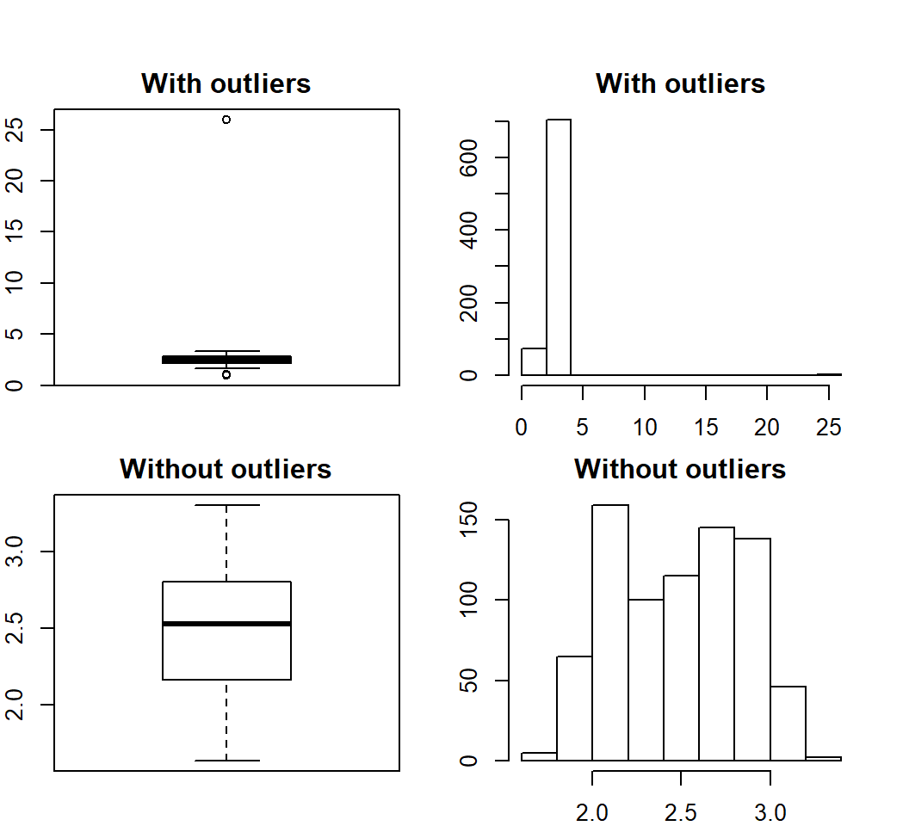
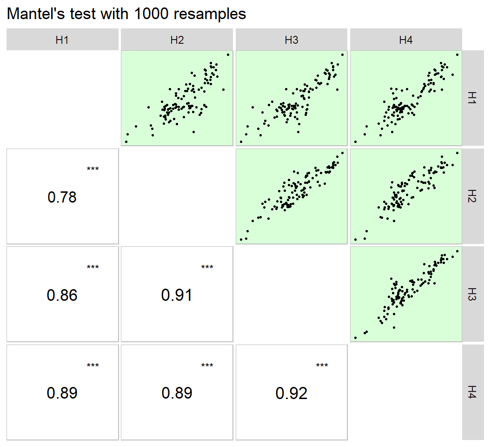
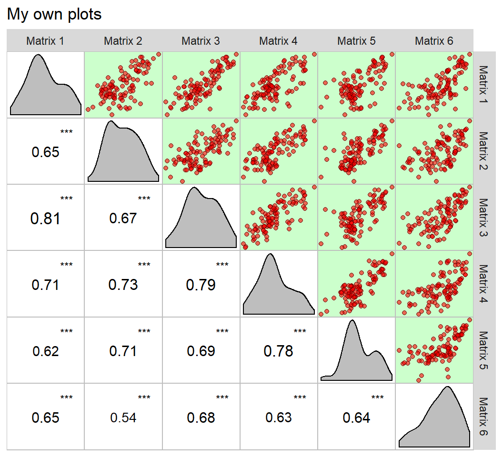

vignettes/vignettes_BIOMETRY.Rmd
vignettes_BIOMETRY.RmdThe function find_outlier() may be used to identify possible outliers in a dataframe. It is suggested that before applying any statistical procedures, outliers be checked.
library(METAAB)
library(dplyr)
data_out = data_ge2
data_out[12, 5] = 26
find_outliers(data_out, var = PH, plots = TRUE)
## Number of possible outliers: 5
## Lines: 12 308 345 526 541
## Proportion: 0.6%
## Mean of the outliers: 6.032
## With outliers: mean = 2.515 | CV = 36.65%
## Without outliers: mean = 2.492 | CV = 14.502%To check the outliers in different levels of a factor, the function group_factors() is used. As an example, we will find possible outliers for each level of the factor ENV.
data_ge2 %>%
group_factors(ENV) %>%
find_outliers(PH)##
## ----------------------------------------------------------------------------
## Level: A1
## ----------------------------------------------------------------------------
## Number of possible outliers: 5
## Lines: 6 81 97 145 171
## Proportion: 2.6%
## Mean of the outliers: 2.084
## With outliers: mean = 2.793 | CV = 7.756%
## Without outliers: mean = 2.812 | CV = 6.593%
##
## ----------------------------------------------------------------------------
## Level: A2
## ----------------------------------------------------------------------------
## No outlier identified.
##
## ----------------------------------------------------------------------------
## Level: A3
## ----------------------------------------------------------------------------
## Number of possible outliers: 12
## Lines: 71 136 151 171 172 173 174 175 190 191 193 194
## Proportion: 6.6%
## Mean of the outliers: 2.492
## With outliers: mean = 2.167 | CV = 12.288%
## Without outliers: mean = 2.145 | CV = 9.252%
##
## ----------------------------------------------------------------------------
## Level: A4
## ----------------------------------------------------------------------------
## Number of possible outliers: 1
## Lines: 184
## Proportion: 0.5%
## Mean of the outliers: 1.64
## With outliers: mean = 2.518 | CV = 9.895%
## Without outliers: mean = 2.522 | CV = 9.579%Pearson’s linear correlation does not consider the influence a set of variables on the relationship between two variables. For example, the * r * = 0.9 observed between x and y may be due to the influence of a third variable or group of variables acting together. To identify this linear effect, the partial correlation is used. From Pearson’s simple correlation matrix, the partial correlation is calculated by the following equation:
\[ {r_{xy.m}} = \frac{{ - {a_{xy}}}}{{\sqrt {{a_{xx}}{a_{yy}}} }} \]
Where \({r_{xy.m}}\) is the partial correlation coefficient between the variables * x * and * y , excluding the effects of the m * remaining variables of the set; \(- {a_{ij}}\) is the inverse element of the correlation matrix corresponding to xy, \({a_{ii}}{a_{jj}}\) are the diagonal elements of the inverse matrix of correlation associated with variable x and y , respectively. The significance of this correlation is also tested by the test * t * according to the following expression:
\[ t_{calc} = r_{xy.m} \sqrt \frac{n-v}{1-r_{xy.m}^2} \]
Where $ t_{calc} $ is the calculated Student * t * statistic; $ r_{xy.m} $ is the partial correlation coefficient for the variables x and y excluding the effect of the other * m * variables; * n * is the number of observations; and * v * is the number of variables. Both the linear and partial correlation coefficients may be obtained using the function lpcor().
## linear partial t prob
## PH x EH 0.84076988 0.983719074 152.2866876 0.000000e+00
## PH x EP 0.32233748 -0.956657582 -91.3930168 0.000000e+00
## PH x EL 0.23498170 0.023465990 0.6530237 5.139349e-01
## PH x ED 0.46930127 0.163281409 4.6044220 4.833731e-06
## PH x CL 0.24190786 -0.097830313 -2.7348417 6.383776e-03
## EH x EP 0.77395760 0.980934660 140.4278355 0.000000e+00
## EH x EL 0.20805515 -0.010739303 -0.2987938 7.651776e-01
## EH x ED 0.45888935 -0.098629827 -2.7574108 5.963398e-03
## EH x CL 0.29611536 0.077176773 2.1535470 3.158391e-02
## EP x EL 0.09966413 0.003907009 0.1086972 9.134709e-01
## EP x ED 0.27750523 0.108052540 3.0238180 2.578519e-03
## EP x CL 0.24044063 -0.054643567 -1.5225055 1.282909e-01
## EL x ED 0.39852625 0.227920650 6.5123545 1.330602e-10
## EL x CL 0.30317197 0.072224486 2.0146083 4.429111e-02
## ED x CL 0.65213809 0.587052003 20.1745471 0.000000e+00# Compute the correlations for each level of the factor ENV
lpc2 = dataset %>%
group_factors(ENV) %>%
lpcor(verbose = FALSE) # Don't show the result in the consoleUsing the pairs_mantel() function, it is possible to compute a Mantel’s test (Mantel 1967) for all pairwise correlation matrices of the above example.
lpc2 %>% pairs_mantel(names = paste("H", 1:4, sep = ""))
This same plot may be obtained by passing correlation matrices with the same dimension to an object of class lpcor and then applying the function pairs_mantel().
as.lpcor(cor(dataset[1:50, 5:ncol(dataset)]),
cor(dataset[51:100, 5:ncol(dataset)]),
cor(dataset[101:150, 5:ncol(dataset)]),
cor(dataset[151:200, 5:ncol(dataset)]),
cor(dataset[201:250, 5:ncol(dataset)]),
cor(dataset[251:300, 5:ncol(dataset)])) %>%
pairs_mantel(diag = TRUE,
pan.spacing = 0,
shape.point = 21,
col.point = "black",
fill.point = "red",
size.point = 1.5,
alpha.point = 0.6,
main = "My own plots",
alpha = 0.2)
The following codes compute a complete collinearity diagnostic of a correlation matrix of predictor variables. Several indicators, such as Variance Inflaction Factor, Condition Number, and Matrix Determinant are considered (T. Olivoto et al. 2017; Tiago Olivoto et al. 2017) The diagnostic may be performed using: (i) correlation matrices; (ii) dataframes, or (iii) an object of class group_factor, which split a dataframe into subsets based on one or more grouping factors.
library(METAAB)
# getting the correlation matrix estimated in the previous example.
cor_data = lpc1$linear.mat
n = nrow(dataset)
# Using a correlation matrix
cold1 = colindiag(cor_data, n = n)## The multicollinearity in the matrix should be investigated.
## NC = 497.723
## Largest VIF = 93.4476625536273
## Matrix determinant: 0.003428
## Largest correlation: PH x EH = 0.841
## Smallest correlation: EP x EL = 0.1
## Number of correlations with r >= |0.8|: 1
## Variables with largest weight in the last eigenvalues:
## EH > PH > EP > ED > CL > EL# Using a dataframe
cold2 = colindiag(dataset)## Severe multicollinearity in the matrix! Pay attention on the variables listed bellow
## CN = 3173.42
## Matrix determinant: 0
## Largest correlation: EL x CD = 0.901
## Smallest correlation: EH x PERK = -0.014
## Number of correlations with r >= |0.8|: 2
## Variables with largest weight in the last eigenvalues:
## CL > ED > CDED > CW > KW > PERK > EH > NKE > PH > TKW > EP > CD > NKR > NR > EL## The factors ENV GEN REP PLA where excluded to perform the analysis. If you want to perform an analysis for each level of a factor, use the function 'group_factors() before.'# Perform the diagnostic for each level of the factor ENV
cold3 = dataset %>%
group_factors(ENV) %>%
colindiag()## The factors GEN REP PLA where ignored. Use 'keep_factors = FALSE' to keep this columns in the grouped data.##
## ----------------------------------------------------------------------------
## Level: A1
## ----------------------------------------------------------------------------
## Severe multicollinearity in the matrix! Pay attention on the variables listed bellow
## CN = 4033.517
## Matrix determinant: 0
## Largest correlation: EL x CD = 0.906
## Smallest correlation: PH x PERK = 0
## Number of correlations with r >= |0.8|: 1
## Variables with largest weight in the last eigenvalues:
## CL > CDED > ED > NKE > CW > EH > TKW > EP > PH > PERK > KW > CD > NKR > NR > EL
##
## ----------------------------------------------------------------------------
## Level: A2
## ----------------------------------------------------------------------------
## Severe multicollinearity in the matrix! Pay attention on the variables listed bellow
## CN = 1777.154
## Matrix determinant: 0
## Largest correlation: EL x CD = 0.962
## Smallest correlation: CL x NKR = 0.002
## Number of correlations with r >= |0.8|: 2
## Variables with largest weight in the last eigenvalues:
## CL > ED > CDED > KW > CW > PERK > EH > PH > EP > EL > CD > NKR > NKE > TKW > NR
##
## ----------------------------------------------------------------------------
## Level: A3
## ----------------------------------------------------------------------------
## Severe multicollinearity in the matrix! Pay attention on the variables listed bellow
## CN = 5151.61
## Matrix determinant: 0
## Largest correlation: EL x CD = 0.843
## Smallest correlation: PH x CD = 0
## Number of correlations with r >= |0.8|: 1
## Variables with largest weight in the last eigenvalues:
## CL > CDED > ED > CW > KW > PERK > EH > PH > CD > EL > EP > NR > NKE > NKR > TKW
##
## ----------------------------------------------------------------------------
## Level: A4
## ----------------------------------------------------------------------------
## Severe multicollinearity in the matrix! Pay attention on the variables listed bellow
## CN = 5121.689
## Matrix determinant: 0
## Largest correlation: EL x CD = 0.896
## Smallest correlation: NR x NKR = -0.013
## Number of correlations with r >= |0.8|: 2
## Variables with largest weight in the last eigenvalues:
## CL > ED > CDED > EH > EP > CW > PH > KW > PERK > TKW > NR > EL > NKE > NKR > CDRecently, a Gaussian-independent estimator for the confidence interval for Pearson’s correlation coefficient was based proposed by Olivoto et al. (2018). This estimator is based on sample size and strength of associations and may be estimated using the function corr.ci(). It is possible to estimate the confidence interval by declaring the sample size (n) and the correlation coefficient (), or using a dataframe.
corr_ci(n = 145, r = 0.34)## -------------------------------------------------
## Nonparametric 95% half-width confidence interval
## -------------------------------------------------
## Level of significance: 5%
## Correlation coefficient: 0.34
## Sample size: 145
## Confidence interval: 0.1422
## True parameter range from: 0.1978 to 0.4822
## -------------------------------------------------ci1 = corr_ci(data_ge2)## The factors ENV GEN REP PLA where excluded to perform the analysis. If you want to perform an analysis for each level of a factor, use the function 'group_factors() before.'ci2 = data_ge2 %>% group_factors(ENV) %>% corr_ci()## The factors GEN REP PLA where ignored. Use 'keep_factors = FALSE' to keep this columns in the grouped data.corr_ss(r = 0.6, CI = 0.1)## -------------------------------------------------
## Sample size planning for correlation coefficient
## -------------------------------------------------
## Level of significance: 5%
## Correlation coefficient: 0.6
## 95% half-width CI: 0.1
## Required sample size: 194
## -------------------------------------------------Mantel, N. 1967. “The detection of disease clustering and a generalized regression approach.” Cancer Research 27 (2). American Association for Cancer Research: 209–20. http://www.ncbi.nlm.nih.gov/pubmed/6018555.
Olivoto, T., A. D. C Lúcio, V. Q. Souza, M. Nardino, M. I. Diel, B. G. Sari, D .K. Krysczun, D. Meira, and C. Meier. 2018. “Confidence interval width for Pearson’s correlation coefficient: a Gaussian-independent estimator based on sample size and strength of association.” Agronomy Journal 110 (1): 1–8. doi:10.2134/agronj2017.09.0566.
Olivoto, T., V. Q. Souza, M. Nardino, I. R. Carvalho, M. Ferrari, A. J. Pelegrin, V. J. Szareski, and D. Schmidt. 2017. “Multicollinearity in path analysis: a simple method to reduce its effects.” Agronomy Journal 109 (1): 131–42. doi:10.2134/agronj2016.04.0196.
Olivoto, Tiago, Maicon Nardino, Ivan Ivan Ricardo Carvalho, Diego Nicolau Follmann, Maurício Ferrari, Alan Júnior de Pelegrin, Vinícius Jardel Szareski, Antônio Costa de Oliveira, Braulio Otomar Caron, and Velcio Queiroz de Souza. 2017. “Optimal sample size and data arrangement method in estimating correlation matrices with lesser collinearity: A statistical focus in maize breeding.” African Journal of Agricultural Research 12 (2). Academic Journals: 93–103. doi:10.5897/AJAR2016.11799.